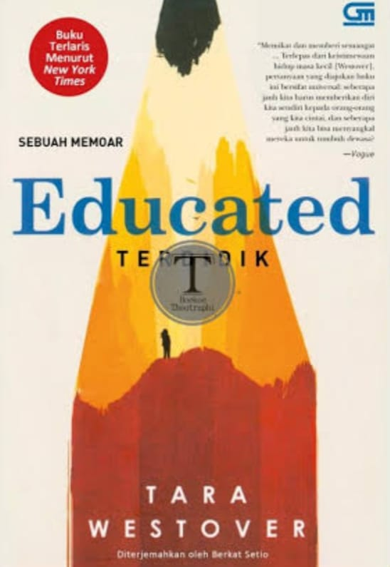
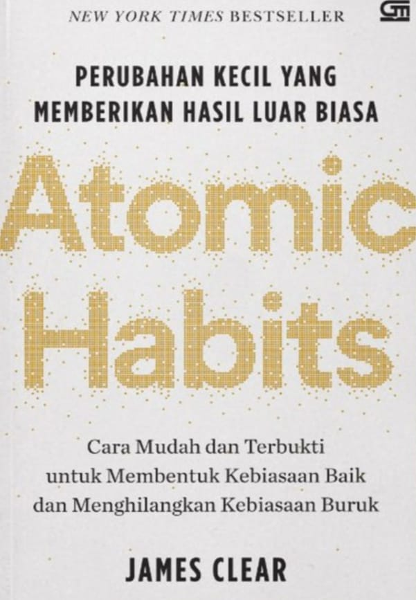
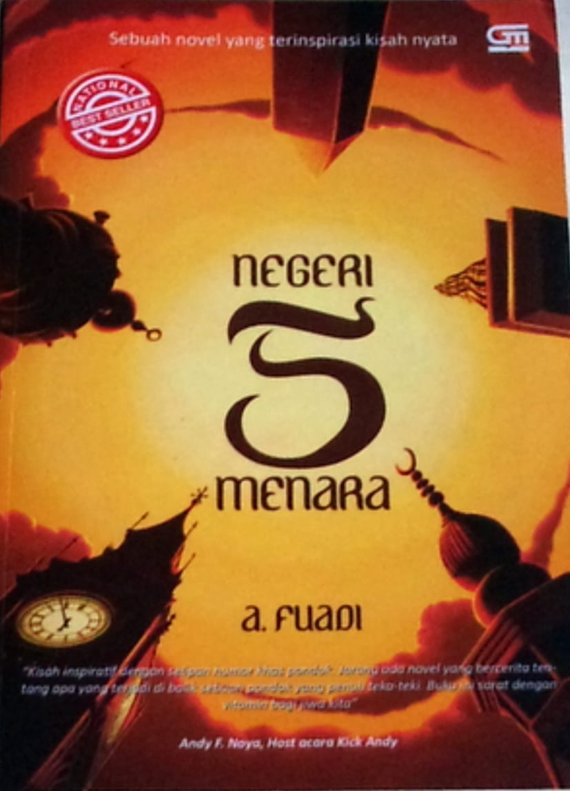
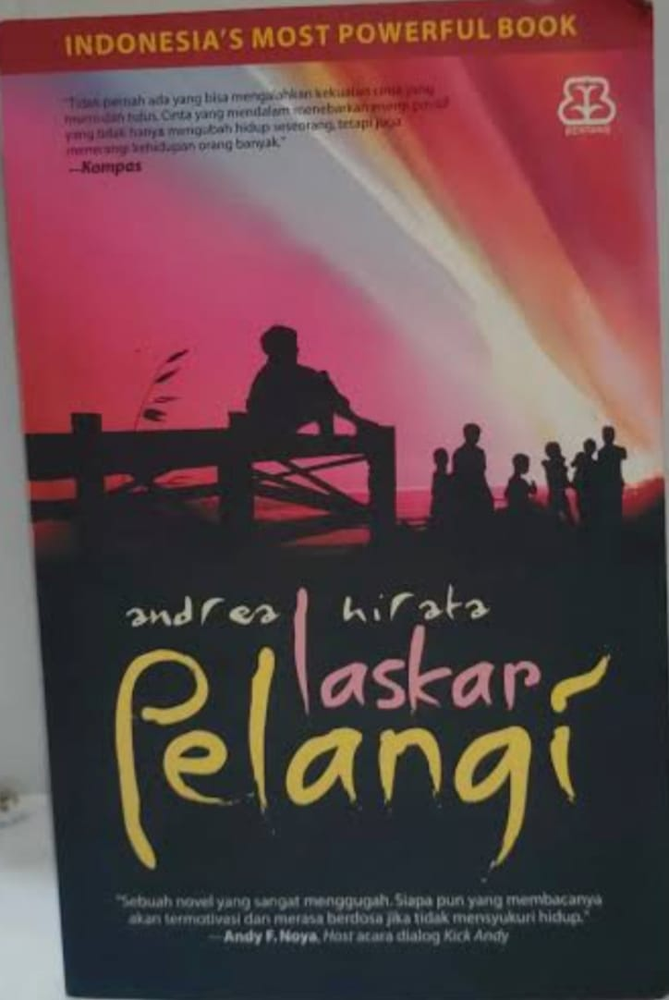
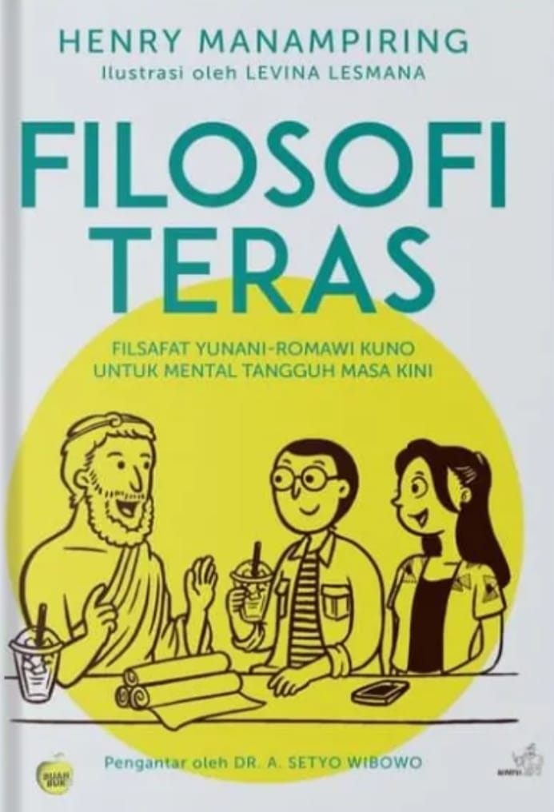

| Gambar | Judul | Penulis | Penerbit | Tahun | Kutipan |
|---|---|---|---|---|---|
 |
Educated | Tara Westofer | Penguin Books | 2018 | "Pendidikan adalah proses penemuan diri sendiri, bukan sekedar menimbun pengetahuan" |
 |
Atomic Habits | James Clear | Gramedia Pustaka Utama | 2019 | "Perubahan kecil 1% setiap hari dapat memberikan dampak besar dalam jangka panjang.kamu tidak naik ke tingkat tujuanmu, kamu jatuh ke tingkat sistemmu" |
 |
Negeri 5 Menara | Ahmad Fuadi | Gramedia Pustaka Utama | 2009 | "Man Jadda Wajada. siapa bersungguh - sungguh, pasti akan berhasi" |
 |
Laskar Pelangi | Andrea Hirata | Bentang Pustaka | 2005 | "Hiduplah untuk memberi sebanyak - banyaknya, bukan untuk menerima sebanyak - banyaknya" |
 |
Filosofi Teras | Henry Manampiring | Kompas penerbit Buku | 2018 | "Kita tidak bisa mengendalikan hal - hal diluar diri kita, tapi kita bisa mengendalikan pikiran dan reaksi kita sendiri" |